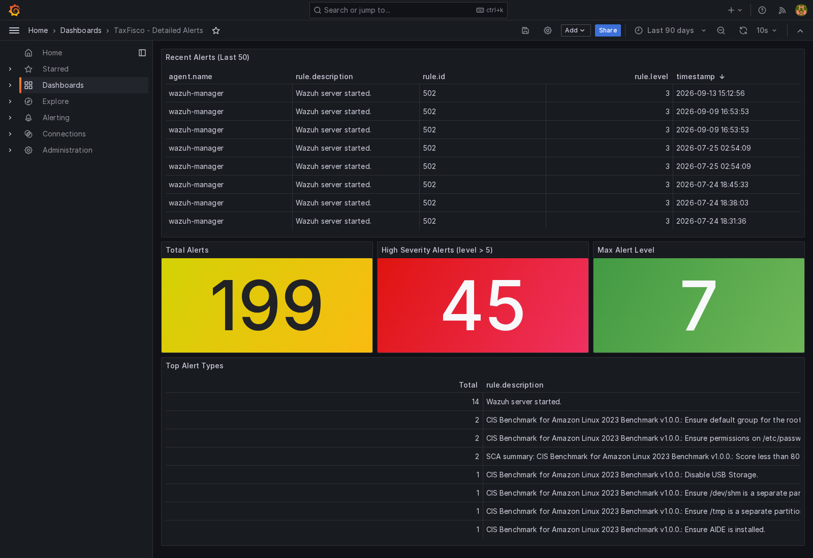

A. Indicadores principales del primer prototipo
Esta sección presenta los resultados medidos del primer
prototipo de la metodología Honeypot, aplicado sobre una entidad homologada
del rubro de servicios fiscales digitales. El laboratorio ejecutó una sola
medición, el catorce de septiembre de 2026, de manera que aquí no existe la
comparación entre dos vueltas que presenta el tablero del segundo prototipo.
Cada tarjeta declara un numerador y un denominador explícitos. Todas las
cifras proceden de los tres reportes de la carpeta
evidencias/07-metricas/.
| Indicador | Qué cuenta | Denominador | Archivo de origen |
|---|---|---|---|
| Escenarios ejecutados | Escenarios que la campaña lanza contra el señuelo | Los diez escenarios que define la campaña | Reporte de indicadores |
| Escenarios con medición | Escenarios a los que el instrumental atribuye una detección y registra su hora | Los diez escenarios que ejecuta la campaña | Reporte de indicadores |
| Tiempo medio de detección | Promedio aritmético de los nueve tiempos medidos | Las nueve mediciones disponibles | Reporte de indicadores |
| Detección por debajo de un minuto | Escenarios cuyo tiempo de detección no supera los sesenta segundos | Los diez escenarios que ejecuta la campaña | Reporte de indicadores |
| Técnicas con detección | Técnicas que un escenario activa y que reciben fuente de atribución | Las diez técnicas que activa la campaña | Reporte de cobertura |
| Tácticas con detección | Tácticas del marco que cubren esas técnicas | Las seis tácticas que la campaña recorre | Reporte de cobertura |
| Componentes que registran detección | Componentes que dejan un registro legible por el calculador | Los cinco declarados en el reporte | Reporte de indicadores |
| Calidad de la evidencia | Puntuación de integridad verificada sobre los archivos con huella | Los sesenta y ocho archivos de evidencia | Reporte de indicadores |
| Segmentos de red verificados | Redes del señuelo con composición efectiva inspeccionada | Las cuatro redes declaradas | Captura de aislamiento |
B. El puente entre los dos laboratorios
Los dos prototipos responden a preguntas distintas y se necesitan entre sí. El primero comprueba que cada componente de la cadena opera por separado. El segundo comprueba qué mejora produce corregir los vacíos que el primero deja ver.
La conexión más clara entre ambos es el escenario S10. En el primer laboratorio la exfiltración por nombres de dominio no produjo tiempo de detección, porque el cálculo solo consultaba tres fuentes y ninguna leía el tráfico DNS. El registro de lecciones del segundo laboratorio recoge ese mismo hallazgo en la lección L14, cuya corrección añade la consulta DNS como fuente. En la medición final del segundo laboratorio ese mismo escenario registra 0,646 segundos con el sensor de red como fuente.
| Escenario | Prototipo 1 | Prototipo 2, medición final | Qué cambió |
|---|---|---|---|
| S10 · Exfiltración por nombres de dominio | fuera de la medición | 0,646 s | La fuente DNS del sensor de red entra en el cálculo |
| S08 · Depósito de archivo | 0,533 s | 0,562 s | El archivo señuelo pasa a ser fuente propia |
| S09 · Conexión inversa | 10,000 s | 0,000 s | El emulador de acceso remoto queda verificado desde el arranque |
C. Tiempo de detección de los nueve escenarios medidos
La campaña ejecuta diez escenarios y el reporte registra el tiempo de detección en nueve de ellos. Cada barra indica cuánto tarda el instrumental en asociar una hora al escenario que produce el evento.
| Escenario | Técnica | Tiempo | Fuente que lo registra |
|---|---|---|---|
| S01 · Reconocimiento activo | T1595 | 16,405 s | Interfaz de servicios, vista del atacante |
| S02 · Escaneo web | T1595.002 | 0,826 s | Portal del señuelo |
| S03 · Fuerza bruta por acceso remoto | T1110.001 | 85,000 s | Emulador de acceso remoto |
| S04 · Inyección de consultas | T1190 | 260,108 s | Interfaz de servicios |
| S05 · Suplantación de credenciales | T1110.004 | 0,141 s | Interfaz de servicios |
| S06 · Inyección en el navegador | T1059.007 | 0,824 s | Interfaz de servicios |
| S07 · Abuso de la interfaz | T1078 | 0,543 s | Interfaz de servicios, registro de ruta |
| S08 · Depósito de archivo | T1105 | 0,533 s | Interfaz de servicios, registro de ruta |
| S09 · Conexión inversa | T1059.004 | 10,000 s | Emulador de acceso remoto |
| S10 · Exfiltración por nombres de dominio | T1048.003 | fuera de la medición | Ninguna fuente lo registró |
D. Distribución del tiempo de detección
Los nueve escenarios con medición, agrupados por magnitud del tiempo registrado. La barra más alta es el tramo por debajo de un segundo.
E. Fuentes que registran la detección
Cada escenario se detecta por un componente distinto. El reporte declara cinco fuentes. El gráfico muestra cuántos escenarios cubre cada una.
F. Cobertura de MITRE ATT&CK
El inventario del señuelo comprende diecisiete técnicas, repartidas en ocho tácticas del marco. La campaña ejecuta diez escenarios y cada escenario activa una técnica distinta. Nueve de esas técnicas reciben fuente de detección. La décima, la exfiltración por nombres de dominio, quedó fuera de la medición porque ninguna fuente la leía. Las siete técnicas restantes pertenecen al inventario del señuelo sin que ningún escenario las ejerza, de manera que la tabla las declara aparte y no les asigna tiempo de detección.
Inventario y detección
Las diecisiete técnicas
| Técnica | Táctica | Escenario | Fuente en la medición |
|---|
G. Aportación de cada fase de la metodología
La metodología se estructura en cinco fases encadenadas. Cada una aporta un elemento distinto al resultado final, de manera que la columna de aportación declara qué se gana con ella y la columna de indicador recoge la medición que entrega.
| Fase | Qué aporta | Indicador | Resultado |
|---|---|---|---|
| 1 · Diseño del señuelo | Define el activo que se engaña, el nivel de interacción y el perfil del atacante, de manera que la campaña tenga un denominador fijo de diez escenarios | Escenarios ejecutados | 10 de 10 |
| 2 · Despliegue aislado | Aísla el señuelo en redes separadas y verifica la composición efectiva desde el propio contenedor atacante, de manera que se demuestre qué queda alcanzable desde fuera | Segmentos de red verificados | 4 |
| 3 · Captura, enriquecimiento y custodia | Registra las acciones del adversario con validez forense y conserva cada archivo con su huella, de manera que la evidencia del ciclo se pueda auditar | Calidad de la evidencia | 100 de 100 |
| 4 · Correlación con gestión de incidentes | Vincula cada evento capturado con la alerta clasificada y con su técnica, de manera que el tiempo medido sea el del ciclo completo y no el de un registro suelto | Fuentes que registran detección | 5 |
| 5 · Medición de impacto y lecciones aprendidas | Cuantifica la efectividad y convierte la medición en un proceso repetible, condición que el segundo laboratorio necesita para su esquema de iteraciones | Escenarios con medición | 9 de 10 |
H. Ejecución de la medición y correspondencia normativa
La medición se produjo una sola vez, el catorce de septiembre de 2026. El reporte que la contiene declara el método con que se calcula cada tiempo. Esta sección reúne esas condiciones de ejecución y la cobertura normativa que el laboratorio sustenta.
Condiciones de la medición
| Laboratorio | TaxFisco Research Lab |
| Entidad | Homologada del rubro de servicios fiscales digitales |
| Fecha del reporte | 2026-09-14T07:31:44Z |
| Método de cálculo | Tiempo desde el inicio del escenario hasta el primer evento que lo registra |
| Escenarios ejecutados | 10 |
| Escenarios con medición | 9 |
| Duración del ciclo de medición | Una sola vuelta, sin iteración posterior |
Segmentación verificada
| Red | Subred | Contenedores |
|---|---|---|
taxfisco-dmz | 10.20.0.0/24 | 6 |
taxfisco-honeypot | 10.21.0.0/24 | 3 |
taxfisco-soc | 10.22.0.0/24 | 19 |
taxfisco-ids | 10.23.0.0/24 | 2 |
Cobertura normativa que el laboratorio sustenta
| Marco | Fase o control | Evidencia en el laboratorio |
|---|---|---|
| ISO/IEC 27035 | Fase 1 · Planificar y preparar | Gestor de eventos preconfigurado, plantillas de casos, flujos de orquestación, caceras previas y reglas propias de red |
| ISO/IEC 27035 | Fase 2 · Detección y reporte | Reglas de correlación del gestor, firmas del motor de red, registros del sensor y señuelos instrumentados |
| ISO/IEC 27035 | Fase 3 · Evaluación y decisión | Gestión de casos, analizadores de inteligencia, correlación de indicadores y flujos de enriquecimiento |
| ISO/IEC 27035 | Fase 4 · Respuesta | Recetas de contención, caceras de aislamiento, distribución de indicadores y segmentación de redes |
| ISO/IEC 27035 | Fase 5 · Lecciones aprendidas | Informes de cierre de caso, tablero de indicadores y actualización de reglas desde la observación |
| ISO/IEC 27001 | Controles de gestión de incidentes | Planificación, evaluación, respuesta, aprendizaje y preservación de la evidencia |
| ISO/IEC 27001 | Controles de monitoreo y red | Actividades de monitoreo y seguridad de las redes |
I. Volumen de actividad de la campaña
Registros que el señuelo y los sensores produjeron durante la ejecución. Cada fila indica qué componente produjo el volumen y qué escenario lo alimenta.
| Indicador | Resultado | Qué lo produce |
|---|---|---|
| Ataques registrados en el señuelo | 46 | Interfaz de servicios del señuelo |
| Peticiones atendidas por la interfaz de servicios | 1 758 | Interfaz de servicios del señuelo |
| Conexiones capturadas por el emulador | 8 | Emulador de acceso remoto |
| Peticiones recibidas por el portal | 8 875 | Portal del señuelo |
| Archivos de evidencia con huella | 68 | Custodia de la evidencia |
| Calidad de la evidencia verificada | 100 de 100 | Verificación de integridad |
J. Evidencia visual del tablero de alertas
Los dos paneles del tablero del primer laboratorio. El panel de indicadores resume el volumen de alertas por severidad y el panel de detalle muestra las alertas recientes con su regla y su hora.

Nota. El panel declara ciento noventa y nueve alertas
indexadas, distribuidas en ciento cincuenta y dos de severidad baja,
cuarenta y cinco alta y dos media. El nivel medio de alerta es 3,92 y el
máximo es 7. Fuente:
evidencias/07-metricas/04_grafana-kpis.png.

Nota. El panel repite el total de ciento noventa y nueve
alertas y añade cuarenta y cinco de severidad alta. Las alertas recientes
corresponden a arranques del gestor de eventos entre el 24 de julio y el
13 de septiembre de 2026. Fuente:
evidencias/07-metricas/05_grafana-detailed-alerts.png.
Metodología Honeypot para la Gestión de Incidentes en Servicios Fiscales conforme a Normas Internacionales. Tesis de maestría. Capítulo IV, Marco Práctico. Dashboard de resultados del Prototipo 1, ejecutado sobre una entidad homologada del rubro de servicios fiscales digitales.
Este tablero reúne los resultados medidos en la única ejecución del primer laboratorio. El segundo laboratorio, adaptado al contexto del Servicio de Impuestos Nacionales, se presenta en el tablero que lo acompaña. La comparación completa entre las dos aplicaciones se encuentra en el capítulo IV, en el apartado 4.3.7, que desarrolla la síntesis comparativa de los dos prototipos.
Todas las cifras proceden de un archivo del repositorio y declaran su
origen en las rutas siguientes.
evidencias/07-metricas/07_kpi-report.json,
evidencias/07-metricas/08_mitre-coverage.json,
evidencias/07-metricas/09_iso27035-compliance.json,
evidencias/03-aislamiento-red/02_subnets.txt,
evidencias/MANIFIESTO.md, las dos capturas del panel de
alertas y el registro de lecciones del segundo laboratorio para la lección
L14. La mediana de 0,826 segundos es un cálculo propio sobre los nueve
valores declarados. Ningún valor fue estimado ni completado por
analogía.